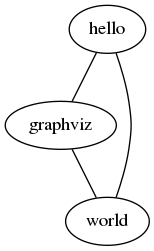
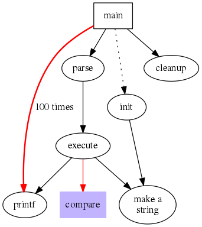
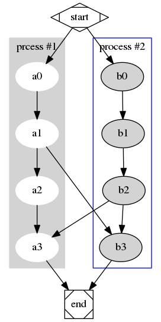

Intro
Graphviz - Graph Visualization Software 由 AT&T
出品， 是一种结构化信息的可视化方式，也是一套开放源代码软件，可以被广泛地使用于网络拓扑、软件工程、数据库设计、机器学习等方向的图表展示。
Graphviz 1.2D 及之前的版本使用了 AT&T 代码许可证 (the AT&T Source Code Agreement)，之后的版本使用了EPL (The Eclipse Public License) 。
Demos
Hello world
新建一个文本文件 a.dot 。
|
|
运行 dot -Tpng a.dot -o a.png
得到：

程序调用
新建一个文本文件 b.dot 。
|
|
运行 dot -Tpng b.dot -o b.png
得到：

节点形状
新建一个文本文件 c.dot 。
|
|
运行 dot -Tpng c.dot -o c.png
得到：

数据结构
新建一个文本文件 d.dot 。
|
|
运行 dot -Tpng d.dot -o d.png
得到：

Hash table
新建一个文本文件 e.dot 。
|
|
运行 dot -Tpng e.dot -o e.png
得到：

流程图
新建一个文本文件 f.dot 。
|
|
运行 dot -Tpng f.dot -o f.png
得到：

Utilities
- dot : filter for drawing directed graphs
- neato : filter for drawing undirected graphs
- twopi : filter for radial layouts of graphs
- circo : filter for circular layout of graphs
- fdp : filter for drawing undirected graphs
- sfdp : filter for drawing large undirected graphs
- patchwork : filter for tree maps
以上命令工具是同一套代码的wrapper，共享相同的命令行参数:
-Gsets a default graph attribute.-Nsets a default node attribute.-Esets a default edge attribute.-Tlangsets the output language.-Klayoutoverride the default layout engine implied by the command name.-Oautomatically generate output filenames based on the input filename and the -T format.-ooutfilewrites output to file outfile.
常用的输出格式有:
- -Tps (PostScript)
- -Tsvg -Tsvgz (Structured Vector Graphics)
- -Tfig (XFIG graphics)
- -Tpng -Tgif (bitmap graphics)
- -Timap (imagemap files for httpd servers for each node or edge that has a non‐null “href” attribute)
- -Tcmapx (client‐side imagemap for use in html and xhtml)
更多输出格式参见 http://www.graphviz.org/content/output-format 。
DOT Language
Abstract Grammar Definition
官方对DOT语言的语法的描述如下：
|
|
具体说明，参见 The DOT Language
。
keywords
DOT 语言里面的关键字是大小写无关的 (node, edge, graph, digraph, subgraph,
strict) 。
graph & digraph
一个图由 graph 或者 digraph 关键字定义，后面跟一个可选的图ID，后跟一对大括号 ({, }) 包围的语句块。grpha 是无向图，digraph 是有向图。
ID
图ID是一个常规的字符串，可以由一个可选的双引号包围起来；如果要使用关键字作为ID，则必须要用双引号；图ID字符串中的字符可以是任意的大小写字符 ([a-zA-Z\200-\377]) ，下划线 (_) 和数字 ([0-9]) ，但不能是以数字开头；图ID也可以是有效的数字 ([-]?(.[0-9]+ | [0-9]+(.[0-9]*)? )) ；图ID也可以是有效的HTML串。
stmt
语句是可以是节点定义语句 (node_stmt) 、边定义语句 (edge_stmt) 、属性定义语句 (attr_stmt) 或者子图定义语句 (subgraph) 。
在 graph 中，需要用 -- 操作符来定义一条边；在 digraph 中，需要用 -> 操作符来定义一条边。
两个语句之间可以用一个可选的 ; 分隔。
subgraph
子图可以用来对节点和边进行分组。
|
|
子图也可以用来批量设置属性。
|
|
子图也可以用来指定布局引擎。如果子图ID以 “cluster”
开始，则该子图会被布局引擎作为特殊的集聚图来对待。
strict
如果使用了 strict
关键字，则图中一个起点一个终点之间最多生成一条边。在无向图中，两个点之间最多一条边；在有向图中，两个点之间最多两条边，并且方向相反。
attrs
属性可以是特定于节点或者边的，也可以是特定于图的。多个属性之间由空格分隔，也可以有可选的 ; 或者 , 。
name=val;: 图属性node [name=val];: 节点属性edge [name=val];: 边属性
详细说明，参见 Graphviz attrs 。